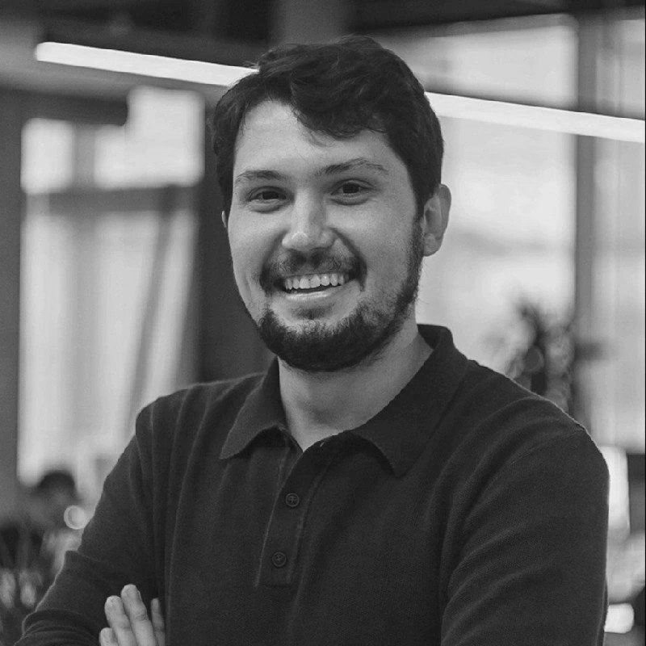

Stüdyo
Demiröz & Koç Mimarlık, Burak Koç tarafından 2026 yılında Ankara’da kurulmuş ve faaliyetlerine başlamıştır. Genç ve dinamik yapısıyla, mimarlığın tüm alanlarında iş üretebilme ve farklı ölçeklerdeki projelerde hızlı organize olabilme esnekliğine sahip olan firma; kentsel tasarım ölçeğinden mimarlık ölçeğine, iç mimari tasarımdan uygulamaya kadar geniş bir yelpazede hizmet sunmaktadır.
Demiröz & Koç Mimarlık; konut, karma kullanım, otel, eğitim yapıları, sosyal ve kültürel tesisler, ofis, ticaret binaları ve iç mekân tasarımı gibi çok çeşitli işlevlerde ve nitelikte mimari projelere aynı titizlikle yaklaşarak tasarım çözümleri üretmektedir.
Çalışma Alanları
Kentsel Tasarım
Mimari Proje
İç Mimari Proje
İç Mimari Uygulama
Kurucu
Burak Koç
Mimar
2013 yılında Yıldız Teknik Üniversitesi Mimarlık Bölümünden mezun olmuştur. Mezuniyetinin ardından Türkiye’nin önde gelen mimari tasarım bürolarında 12 yılı aşkın süre çalışarak mesleki tecrübe edinmiş; bu süreçte ekip ve proje yöneticiliği üstlenmiştir. Farklı ekiplerle birlikte çeşitli ulusal mimari proje yarışmalarına katılmıştır. 2019 yılında İstanbul Teknik Üniversitesi Mimari Tasarım Tezli Yüksek Lisans Programı'nı tamamlamıştır.
2026 yılı itibarıyla kurucusu olduğu Demiröz & Koç Mimarlık bünyesinde çalışmalarına devam etmektedir.
